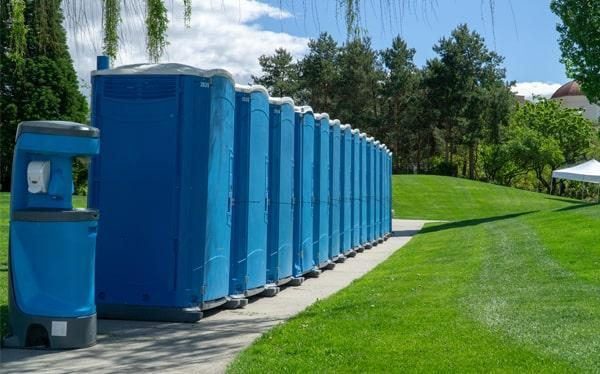

A handwashing station is a simple piece of equipment doing an outsized amount of work: it's often the difference between a food vendor passing a Broward County health inspection and getting shut down on event day. Our stations are self-contained units with a fresh-water supply tank, a separate greywater collection tank, a foot-pump or hands-free faucet, soap dispenser and paper towel holder — no plumbing hookup required, which is exactly why they're the standard solution for outdoor food service, festivals and jobsites without running water.
Beyond the compliance angle, handwashing stations have become a baseline expectation rather than a nice-to-have, especially on construction sites with larger crews and at any event serving food or drink. We rent them both as a standalone service and as an add-on to a restroom order — many customers pair one or two stations with their portable toilet rental to round out a complete sanitation setup.
What's Included With Every Rental
Everything needed for a fully functional, compliant handwashing setup — no external water or power source required.
- Fresh-water supply tank, filled and ready on delivery
- Separate greywater holding tank for used water
- Foot-pump or hands-free faucet operation
- Soap dispenser, pre-filled
- Paper towel dispenser and mounting
- Free delivery, pickup and refill service on multi-day rentals
Why Weston Chooses RapidClean For Handwashing Station Rental
Health-Code Ready
Stations meet the freshwater handwashing expectations most Broward County food-vendor permits require.
No Hookup Needed
Fully self-contained tanks mean placement isn't limited by nearby plumbing or electrical access.
Easy Pairing
Add a station to any porta potty order in the same call — we coordinate delivery together to save you a second trip charge.
Refill Service Included
Multi-day rentals get scheduled refills so the station never runs dry mid-event or mid-week.
Sized For Any Crew
From a single unit for a small vendor booth to a row of stations for a large jobsite, we scale the order to your headcount.

Who This Service Is Built For
- Food trucks, vendor booths and farmers markets
- Festivals, fairs and any event with food or beverage service
- Construction and landscaping crews without on-site water access
- Schools, camps and youth sports events
- Disaster response and emergency relief staging areas
- Any jobsite pursuing OSHA or client-driven hygiene standards
Sizing & Duration Guide
A quick reference for typical handwashing station rental orders — call us if your situation doesn't map neatly to a row below and we'll size it together.
| Scenario | Recommendation | Notes |
|---|---|---|
| Single food vendor or booth | 1 station | Position directly adjacent to the food prep area |
| Construction crew of 10–25 | 1–2 stations | Place near break areas for realistic usage |
| Festival with multiple food vendors | 1 station per 2–3 vendors | Refill service scheduled around event hours |
| Multi-week jobsite | 1 station per 15 workers | Combine with standard toilet rental for full coverage |
Placement & Delivery Tips
Place the station somewhere genuinely convenient to how people move through the space — right next to food prep, near the break area on a job site, or along the main path between parking and the event itself. A station tucked in a far corner tends to get skipped, which defeats the purpose. Firm, level ground keeps the unit stable and prevents the tanks from shifting, and a bit of shade helps keep the water more comfortable on a hot Florida afternoon. If you're pairing a station with a portable toilet order, ask us to place them near each other — most guests expect to find them together, and clustering also simplifies our service route. For multi-day events, let us know your expected daily attendance up front so we can schedule a mid-event refill instead of leaving it to chance.
Delivering Handwashing Station Rental Across Weston & Florida
Broward County's food-vendor permitting process frequently checks for freshwater handwashing access at markets and festivals, which makes this one of our most time-sensitive services around Weston's community event calendar. We keep a dedicated stock of stations separate from our restroom fleet so a last-minute vendor addition doesn't get stuck behind restroom delivery scheduling. On construction sites throughout Weston, Davie and Pembroke Pines, we also see growing demand from general contractors formalizing hygiene stations as a standard part of their site setup, not just an inspection requirement.
Fresh water, no hookup. That's the entire pitch — and the entire compliance win.
Frequently Asked Questions
Most Broward County health permits for food vendors and mobile food units require accessible handwashing facilities with fresh water, soap and towels. Requirements vary by permit type, so confirm the specifics with your permitting office — we can typically deliver whatever configuration they require.
Tank capacity varies by unit, but a standard station comfortably supports a single vendor booth or small crew for a full event day. For multi-day rentals or high-traffic events, we schedule a refill visit as part of the quote.
Yes, they're available as a standalone rental. Many customers do pair the two, but a station-only order is common for vendor booths and jobsites with existing restroom access.
No — both the water pump (foot-operated or hands-free) and the unit itself are fully self-contained, with no electrical or plumbing connection required.
As close as practical — we generally recommend positioning it directly at or near the prep area for both convenience and inspector visibility. Let us know your booth layout when booking.
We deliver the morning of your event (or the evening before, if preferred), and pick up after your event wraps. Single-day rentals are priced as a flat rate with no minimum multi-day commitment.
In most cases, yes — a properly stocked freshwater station with soap and towels satisfies the handwashing component of a mobile food or temporary event permit, but exact requirements are set by the permitting authority. Tell us which permit you're working with and we'll confirm the station meets what's expected.